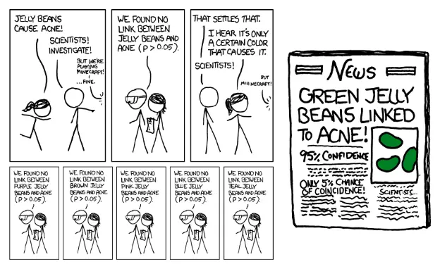
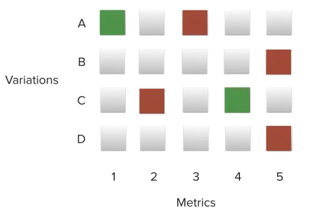
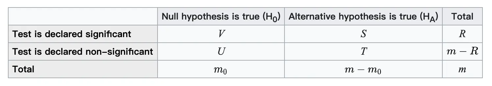

本文介绍A/B实验中一个常见的错误——多重检验错误，它经常影响实验得到错误的结论。相关数学推导放在文末，跳过不影响理解。
错误案例
让我们从先看一个例子：软糖会导致粉刺么？

如图，各实验组食用不同颜色软糖，绿色软糖组粉刺情况与对照组显著改变(p < 0.05)，似乎可以得到绿色软糖会影响粉刺。但是各种软糖成分几乎是相同的，为什么只有绿色会影响呢？问题出在哪？
错误原因
- 假设检验通建立在统计学原理上，假设检验并不能不产生误判，而是控制误判在我们预设范围之内，称为假阳性错误（α水平，一般选在5%）
- 每次验证都会有错误的概率，因此只要检验次数增加，遇到至少一次错误的概率也会增加。
案例分析
上面的例子中，把各种颜色的糖作为不同实验组，与对照组进行对比。假设有20种糖，假阳性水平控制为5%，预期得到的显著结果为 20 * 5% = 1。我们很容易发现某种颜色糖果“似乎”与粉刺有关系，然而这是错误的。
如何避免
1. 合理的设计实验
设计实验前充分分析、调查，针对相关可能最大的因素进行实验，避免大量无用因素干扰得到错误结论。
宗旨：尽量减少检验次数，降低犯错概率
- 控制实验组尽可能少
不同颜色软糖对粉刺的影响不应该有区别，因此只需要设计一组实验组。
- 控制指标尽可能少
我们可以同时检验软糖实验组对粉刺、喉咙痛、高血压…再夸张些，婚姻幸福度、孩子情况…检验的指标越多，得到假阳性结果的可能性同样上升（吃软糖与生女孩相关明显是荒谬的）。 
2. 多次检验校正
统计学领域已经发明了一些方法来对多次检验进行校正。主要思想是检验次数越多，就要对显著采用更严格的限制，但是都会导致power的损失，降低发现率。
常用方式：Bonferroni correction、Holm–Bonferroni method。
缺点：会导致power有所损失（特别是检验结果不独立时）。
3. 实验后分析
显著不等于一定正确。实验后需要对实验进行因果分析，结果需要可合理解释（不是编故事）。如果采用了多次检验校正，还需要考虑假阴性问题。
总结
明确概念，显著 ≠ 正确。 谨慎设计实验，尽量规避多重检验问题，必要情况下通过统计学方法校正。
多重检验校正方法推导
符号定义
 m：总检验假设数
m0：零假设正确的数量，我们无法得知
m - m0：备择假设正确的数量
V：假阳性结论数量
S：真阳性数量
T：假阴性数量
U：真阴性数量
R = V + S：拒绝零假设数量
在m个假设检验中，m0个零假设为真，R是观察到的显著情况的随机变量，S、T、U、V都是不可观测的随机变量。
相关推导
如果m次检验是独立的，则产生假阳性的概率为:
\(\alpha = 1 - ( 1 - \alpha_{sub} )^{m}\)
如果检验不是独立的，仍然有：
\(\alpha \leq m * \alpha_{sub}\)
Bonferroni correction
方法：将每次检验的显著性从$ {sub}\(调整为\){newSub}$ = $ _{sub} / m$
原理：根据上述不等式，则有\(\alpha \leq m * \alpha_{newSub} = \alpha_{sub}\) ，因此可以有效将假阳性水平控制在预设之内。
优点：简单好理解。
缺点：由于条件过于严格，假阴性错误率升高。
Holm–Bonferroni method
方法：将得到的P值从小到大排序记序号为i(1 ~ m)，从i = 1开始与 \(\alpha / (m - i + 1)\)比较，小于就继续比较下一个。直到找出不符合条件的i(也可能不存在) ，i之前的全部认为显著，i及i之后的全部不显著。 原理： >1. 将p值从大到小排序；
>2. 我们只需要关心P值最小的第一个零假设为真的情况：如果被拒绝，产生假阳性；否则，比较过程停止，未产生假阳性；
>3. 设第一个零假设为真的比较序号为h，则共有h - 1次正确的拒绝零假设，则：
本次拒绝零假设条件为\(\alpha / (m - h + 1)\) (a);
\(h - 1 \leq m - m0\)（正确拒绝的次数，一定小于等于备择假设为真的次数）；
推出\(\frac{1}{m - h + 1} \leq \frac{1}{m_0}\) (b)；
不等式两边乘以\(\alpha\)，得到(a)$ \(。 >4. 根据相关推导中结论，单次比较\)_{sub} \(，又\)m_0$种等可能情况，则:
\(\alpha_{_{real}} \leq m_0 * \alpha_{sub} \leq \alpha\)
优点：相对简单，假阴性错误率小于等于Bonferroni correction。
缺点：假阴性依然高于预设（尤其是在检验结果相关情况下）。